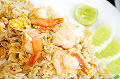
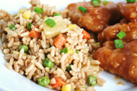
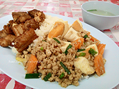

เมนูแนะนำ
ข้าวผัดกุ้ง แม่น้ำ
ข้าวผัดกุ้งแม่น้ำ กุ้งจากแม่นน้ำสดๆ อร่อยลงตัวด้วยการผัดแบบประณีต ด้วยไปอ่อนอุณหภูมิ 90องศาเซลเซียล ห้อมกลิ่นมะนาวจากดอยคำ และข้าวมะลิที่หอมนุ่ม

เมนูแนะนำ
ข้าวผัดถั่วลันเตา ไก่ซอสญี่ปุ่น

ข้าวผัดถั่วลันเตา ไก่ซอสญี่ปุ่น ประกอบด้วย ถั่วลันเตา ข้าวกล้อง แครอท ข้าวโพด และมาพร้อมไก่ อกนุ่มที่บรรจงปรุงให้อร่อยด้วยซอสญี่ปุ่น ที่อดห้ามใจไม่ไหว
เมนูแนะนำ
ข้าวราดผัดเต้าหู้ไข่เค็มชีโครงหมูทอด
ข้าวมะลิหอมนุ่ม ราดด้วยผัดเต้าหู้ไข่เค้ม ที่เชิฟพร้อม ชี่โครงหมูทอดกระเทียม ได้รสชาติที่กลมกล่อม หอมอร่อย ที่มีความลงตัวของเต้าหู้ และไข่เค็ม ทำให้อร่อยจนฉุดไม่อยู่